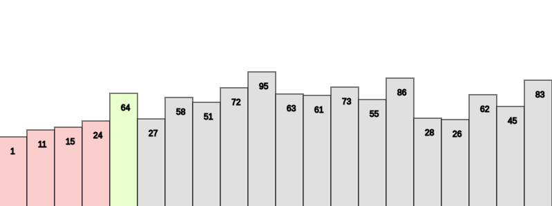

What is a Selection Sort?
Selection sort is a simple comparison-based sorting algorithm. It is in-place and needs no extra memory.
The idea behind this algorithm is pretty simple. We divide the array into two parts: sorted and unsorted.
The left part is sorted subarray and the right part is unsorted subarray. Initially, sorted subarray is
empty and unsorted array is the complete given array.
Selection Sort: Basic Steps Overview
Step 1 - Pick the minimum element from the unsorted subarray.
Step 2 - Swap it with the leftmost element of the unsorted subarray.
Step 3 - Now the leftmost element of unsorted subarray becomes a part (Rightmost) of sorted subarray and will not be a part of unsorted subarray.
Selection Sort Example:
Consider the following array: [ 64, 25, 12, 22, 11 ].
Step 1:
Starting at indedx 0, locate the minimum element in the array and place it at the beginning.
[ 64, 25, 12, 22, 11 ] -> [ 11, 25, 12, 22, 64 ]
Step 2:
Move to index 1 and locate the minimum element in the array and place it at the beginning.
[ 11, 25, 12, 22, 64 ] -> [ 11, 12, 25, 22, 64 ]
Step 3:
Move to index 2 and locate the minimum element in the array and place it at the beginning.
[ 11, 12, 25, 22, 64 ] -> [ 11, 12, 22, 25, 64 ]
Step 4:
Move to index 3 and locate the minimum element in the array and place it at the beginning.
[ 11, 12, 22, 25, 64 ] -> [ 11, 12, 22, 25, 64 ]
Interview Bit (Source)
Geeks For Geeks (Source)

X